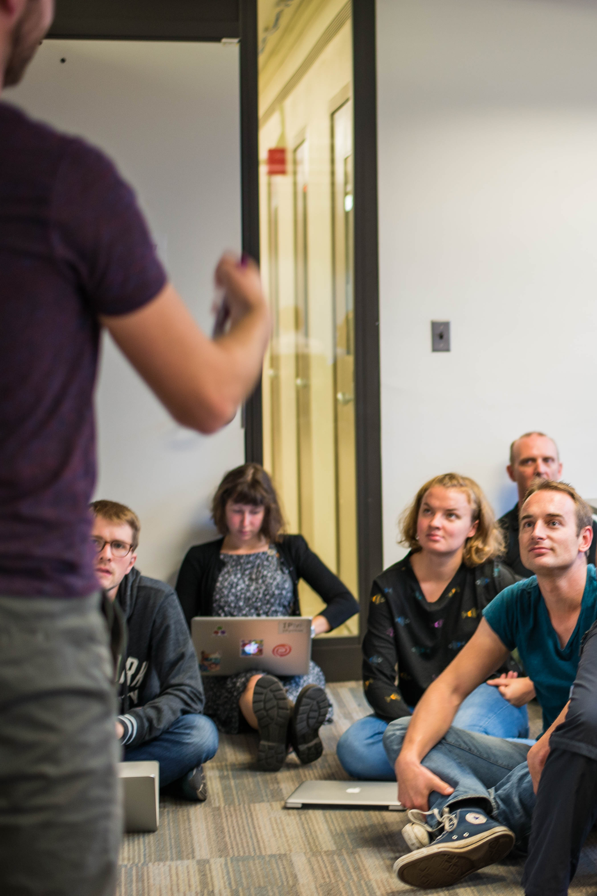
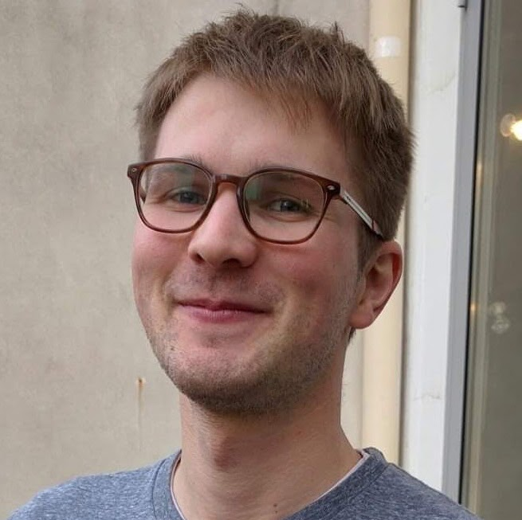
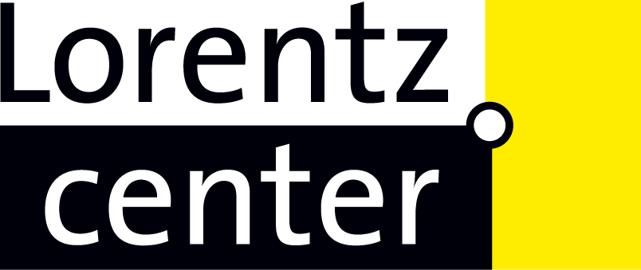
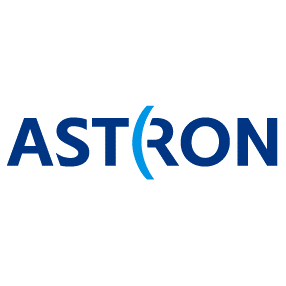

<!DOCTYPE HTML>
<!--
	Overflow by HTML5 UP
	html5up.net | @ajlkn
	Free for personal and commercial use under the CCA 3.0 license (html5up.net/license)
-->
<html>
	<head>
		<title>BIDS Diversity Event/title>
		<meta charset="utf-8" />
		<meta name="viewport" content="width=device-width, initial-scale=1" />
		<!--[if lte IE 8]><script src="assets/js/ie/html5shiv.js"></script><![endif]-->
		<link rel="stylesheet" href="assets/css/main.css" />
		<!--[if lte IE 8]><link rel="stylesheet" href="assets/css/ie8.css" /><![endif]-->
		<html lang="en">
	</head>
	<body>
						<div id="page-wrapper">

		<!-- Header -->
			<section id="header">
				<header>
					<h1>Fostering diverse and inclusive data science at Berkeley</h1>
					<p>Date TBD, Early Spring 2019 <br />
					Berkeley, CA</p>
															<!-- <nav>
														<a href="#menu">Menu</a>
												</nav> -->

				</header>
<!--
										<nav id="menu">
												<div class="inner">
														<h2>Menu</h2>

								<ul class="links">
										<li><a href="#">Home</a></li>
										<li><a href="#">About</a></li>
										<li><a href="#">Lecturers</a></li>
										<li><a href="#">Schedule</a></li>
										<li><a href="#">Live Stream</a></li>
										<li><a href="#">Code of Conduct</a></li>
										<li><a href="#">Travel</a></li>
										<li><a href="#">Organizers</a></li>
										<li><a href="#">Sponsors</a></li>
										<li><a href="#">Contact</a></li>
										<li><a href="#">Application</a></li>


								</ul>

														<a href="#" class="close">Close</a>
												</div>
										</nav>
-->

								<!-- I don't think this button is really necessary, and it displays overlapping the title on chromium/linux
				<footer>
					<a href="#banner" class="button style2 scrolly-middle">Tell me more!</a>
				</footer>
								-->
			</section>

		<!-- Banner -->
			<section id="banner">
				<header>
					<h2> An event for under-represented undergraduate students</h2>
				</header>
				<!--<p>A brand new site template designed by <a href="http://twitter.com/ajlkn">AJ</a> for <a href="http://html5up.net">HTML5 UP</a>.<br />
				It’s fully responsive, built on <strong>skel</strong>, and of course entirely free<br />
				under the <a href="http://html5up.net/license">Creative Commons license</a>.</p>
				<footer>
					<a href="#first" class="button style2 scrolly">Act on this message</a>
				</footer> -->
			</section>

		<!-- Feature 1 -->
			<article id="first" class="container box style1 right">
				<a href="#" class="image fit"></a>
				<div class="inner">
					<header>
						<h3>A [noun]</h3>
					</header>
						<p> This is a high-level description of the event. It is an event. It events. <p>

				</div>
			</article>

		<!-- Feature 2 -->
			<article class="container box style1 left">
				<a href="#" class="image fit"></a>
				<div class="inner">
					<header>
						<h3>Another noun</h3>
					</header>
					<p>More descriptions of things can go here.</p>	
				</div>
			</article>

		<!-- Portfolio -->
			<article class="container box style2">
				<header>
					<h3>Speakers</h3>
					<p>Below is the line-up of tutorial lecturers in our previous conferences. <br /> 
					We anticipate a similar set of high-profile speakers for AstroHackWeek 2018. <br /> Stay tuned for details! </p>
				</header>
				<div class="inner gallery">
					<div class="row 0%">
						<div class="2u 12u(mobile)"><a href="images/placeholder.jpg" class="image fit"></a></div>
						<div class="2u 12u(mobile)"><a href="images/placeholder.jpg" class="image fit"></a></div>
						<div class="2u 12u(mobile)"><a href="images/placeholder.jpg" class="image fit"></a></div>
						<div class="2u 12u(mobile)"><a href="images/placeholder.jpg" class="image fit"></a></div>
						<div class="2u 12u(mobile)"><a href="images/placeholder.jpg" class="image fit"></a></div>
						<div class="2u 12u(mobile)"><a href="images/placeholder.jpg" class="image fit"></a></div>
					</div>
						<div class="row 0%">
						<div class="2u 12u(mobile)"><a href="images/placeholder.jpg" class="image fit"></a></div>
						<div class="2u 12u(mobile)"><a href="images/placeholder.jpg" class="image fit"></a></div>
						<div class="2u 12u(mobile)"><a href="images/placeholder.jpg" class="image fit"></a></div>
						<div class="2u 12u(mobile)"><a href="images/placeholder.jpg" class="image fit"></a></div>
						<div class="2u 12u(mobile)"><a href="images/placeholder.jpg" class="image fit"></a></div>
						<div class="2u 12u(mobile)"><a href="images/placeholder.jpg" class="image fit"></a></div>
					</div>
				</div>
			</article>

						<article class="container box style3">

				<section>
					<div class="table-wrapper">
											<h2>Schedule</h2>
						<font size="-2">
						<table>
						<!--	<thead>
								<tr>
									<th>ID</th>
									<th>Name</th>
									<th>Description</th>
									<th>Price</th>
								</tr>
							</thead> -->
							<tbody>
								<tr>
									<td>Day 1</td>
									<td>Data Visualization</td>
									<td>Daniela Huppenkothen, Ellianna Schwab Abrahams</td>
								</tr>
								<tr class="style1">
									<td>Day2</td>
									<td>Bayesian Inference and Sampling Methods</td>
									<td>Ruth Angus, Dan Foreman-Mackey</td>
								</tr>
								<tr>
										<td>Day 3</td>
										<td>Machine Learning Theory</td>
										<td>Iain Murray, Gilles Louppe</td>
								</tr>
								<tr>
										<td>Day 4</td>
										<td>Practical Machine Learning, Likelihood-Free Inference</td>
										<td>Zack Akil, Iain Murray, Dan Foreman-Mackey</td>
								</tr>
								<tr>
										<td>Day 5</td>
										<td>All-Day Hacking!</td>
										<td></td>
								</tr>
							</tbody>
						</table>
						</font>
					</div>
				<div>
				<p>
				For the full schedule, see <a href="https://github.com/AstroHackWeek/AstroHackWeek2018/wiki/Detailed-Schedule" target="_blank">here</a>.</p>

				<p>
				To get an idea of the content, you can check out the recorded lectures from <a href="https://www.youtube.com/channel/UC7BUtrXxvkaKn6QLWKdmzCw" target="_blank">2015</a> and <a href="https://www.youtube.com/playlist?list=PLKW2Azk23ZtQSHmwOpObPEr58Pe1rpIdB" target="_blank">2016</a> or the lecture materials (also for <a href="https://github.com/AstroHackWeek/AstroHackWeek2015" target="_blank">2015</a>, <a href="https://github.com/AstroHackWeek/AstroHackWeek2016" target="_blank">2016</a> and <a href="https://github.com/AstroHackWeek/AstroHackWeek2017" target="_blank">2017</a>) on github.
				</p></div>
				</section>

						<section>
								<div>
								<h3>Code of Conduct</h3>
								<p>
	During Astro Hack Week, we require participants to follow the code of conduct for the workshop which can be found <a href="http://astrohackweek.org/2018/code-of-conduct.html" target="_blank">on our code of conduct page</a>. If you have any questions about the workshop, you can reach the organizing committee at astrohackweek@gmail.com.
								</p>
								</div>
						
						</section>
						<section>
								<div>
								<h3>Travel and Lodging</h3>	
									<p>
										The closest large airport to the Lorentz Center@Oort in Leiden is the Schiphol Amsterdam airport. Trains to Leiden Central Train Station (direction Den Haag or Vlissingen) depart every 15 minutes and take about 20 minutes (and cost 5-10 EUR). The trip from the Station to the Center takes about 30min by foot, or a short trip by taxi or bus (buses 43 or 57). More information can be found here: <a href="http://www.lorentzcenter.nl/howto.php">http://www.lorentzcenter.nl/howto.php</a>.
									</p>
								</div>
						
						</section>

</article>
						<article class="container box style4">
							 <section>   
					   </section>
</article>
						<section id="banner">
								<header>
								</header>
						</section>
<!-- </article> -->
						<article class="container box style2">

								<header>
										<h3>Organizers</h3>
										<p>This year's event is being organized by</p>
								</header>

                                <div class="inner gallery">
                                        <div class="row 0%">
												<div class="2u 10u(mobile)"><a href="images/anderson.jpg" class="image fit"></a></div>
												<div class="2u 10u(mobile)"><a href="images/huppenkothen.jpg" class="image fit"></a></div>
												<div class="2u 10u(mobile)"><a href="images/leistedt.jpg" class="image fit"></a></div>
												<div class="2u 10u(mobile)"><a href="images/schwab.jpg" class="image fit"></a></div>
												<div class="2u 10u(mobile)"><a href="images/vanderplas.jpg" class="image fit"></a></div>

                                        </div>
                                </div>

								<div class="inner gallery">
										<div class="row 0%">
										</div>
								</div>
						</article>

						<article class="container box style3">
								<header>
										<h3>Sponsors</h3>
										<p>Astro Hack Week is a part of the <a href="http://msdse.org" target="_blank">Moore-Sloan Data Science Environments</a> at University of California Berkeley, New York University, and the University of Washington. It is made possible by the following sponsors:
</p>

								</header>

								<div class="inner gallery">
										<div class="row 20%">
												<div class="4u 12u(mobile)"><a href="https://www.moore.org" target="_blank"></a></div>
												<div class="4u 12u(mobile)"><a href="https://sloan.org" target="_blank"></a></div>
 <div class="4u 12u(mobile)"><a href="https://escience.washington.edu" target="_blank"></a></div>


										
		<div class="4u 12u(mobile)"><a href="http://www.lorentzcenter.nl" target="_blank"></a></div>
 <div class="4u 12u(mobile)"><a href="https://www.google.com" target="_blank"></a></div>
 <div class="4u 12u(mobile)"><a href="http://astron.nl" target="_blank"></a></div>

					</div>
					<div class="row 20%">	

									</div>
				</div>	

			</article>

						<article class="container box style4">
							 <section>  
					   </section>
</article>


						<article class="container box style3">

								<section id="announcement">
					<header>
										   <h3>Announcement</h3>
					<p align="left">Dear colleagues,</p>
<p align="left">
Applications are open for the fifth Astro Hack Week! The 2018 edition will be held at the Lorentz Center@Oort, Leiden, The Netherlands, from August 6 to August 10, 2018. All scientists, including graduate students, senior undergraduates, faculty, postdocs, as well as anyone whose work relates to astronomy outside academia, are invited to apply to attend.
</p>
<p align="left">
Due to the interactive nature of the workshop and our space constraints, we expect to cap attendance at approximately 50 people.
</p>
<p align="left">
Astro Hack Week is a mixture of data analysis summer school and unconference-enabled collaborative research. There are no formal prerequisites. Participants will learn the theoretical foundation of, and practical knowledge in, statistical and machine learning methods crucial to modern astronomical data analysis. We welcome participants to bring their own research projects with them; Astro Hack Week is a great place to apply new skills and methods, and work with others to move these projects forward. It is also an opportunity to work on something new, and we encourage participants to apply their technical knowledge to outstanding problems in the astronomical community. 
</p>
<p align="left">
For more information, please see our website at <a href="http://astrohackweek.org" target=_blank>http://astrohackweek.org</a>. The application is available <a href="https://docs.google.com/forms/d/e/1FAIpQLScg5T3mQOLt0f85-NM9_7DAWfJYT-VH6aNNGBh76qokH1Ampw/viewform?usp=sf_link">here</a>.
</p>
<p align="left">
We hope to see you in Leiden in August! Please forward this announcement to anyone who may be interested.
</p>
<p align="left">
Sincerely, the Astro Hack Week organizing committee: 
</p>
<p>
Lauren Anderson, <br> 
Daniela Huppenkothen, <br>
Boris Leistedt, <br>
Ellianna Schwab, <br>
Jake VanderPlas
</p>
<p>
<a href="mailto:astrohackweek@gmail.com">astrohackweek@gmail.com</a>
</p>
</header>
						</section>
		</article>

						<article class="container box style4">
							 <section>
					   </section>
</article>

						<section id="banner">
								<header>
					<h3>Application</h3>
					<p> Please click <a href="https://docs.google.com/forms/d/e/1FAIpQLScg5T3mQOLt0f85-NM9_7DAWfJYT-VH6aNNGBh76qokH1Ampw/viewform?usp=sf_link">here</a> to apply. </p>
			</header>
						</section>

		<section id="footer">
			<ul class="icons">
								<li><a href="mailto:astrohackweek@gmail.com" class="icon fa-envelope"><span class="label">E-mail</span></a></li>

				<li><a href="https://twitter.com/astrohackweek" class="icon fa-twitter" target="_blank"><span class="label">Twitter</span></a></li>
				<li><a href="http://github.com/AstroHackWeek" class="icon fa-github" target="_blank"><span class="label">GitHub</span></a></li>
								<li><a href="https://www.youtube.com/channel/UC7BUtrXxvkaKn6QLWKdmzCw" class="icon fa-youtube-play" target="_blank"><span class="label">Youtube channel</span></a></li>

			</ul>
			<div class="copyright">
				<ul class="menu">
					<li>&copy; the AstroHackWeek organizers. All rights reserved.</li><li>Design: <a href="http://html5up.net" target="_blank">HTML5 UP</a></li>
				</ul>
			</div>
		</section>

</div>
		<!-- Scripts -->
			<script src="assets/js/jquery.min.js"></script>
			<script src="assets/js/jquery.scrolly.min.js"></script>
			<script src="assets/js/jquery.poptrox.min.js"></script>
			<script src="assets/js/skel.min.js"></script>
			<script src="assets/js/util.js"></script>
			<!--[if lte IE 8]><script src="assets/js/ie/respond.min.js"></script><![endif]-->
			<script src="assets/js/main.js"></script>

	</body>
</html>
